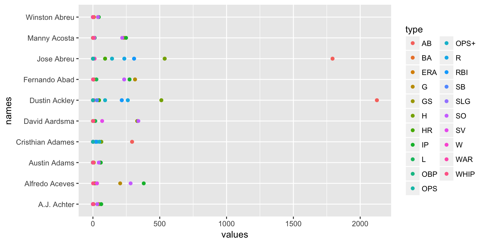

Lab #4: Web Scraping

Heike Hofmann
vignette("selectorgadget")ggplot2).Getting a list of links to players:
library(tidyverse)
library(rvest)
url <- "http://www.baseball-reference.com/players/a/"
html <- read_html(url)
playerNames <- html %>% html_nodes("b a") %>% html_text()
playerlinks <- html %>% html_nodes("b a") %>% html_attr("href")
playerlinks[1:10]## [1] "/players/a/aardsda01.shtml" "/players/a/abadfe01.shtml"
## [3] "/players/a/abreujo02.shtml" "/players/a/abreuwi01.shtml"
## [5] "/players/a/aceveal01.shtml" "/players/a/achteaj01.shtml"
## [7] "/players/a/ackledu01.shtml" "/players/a/acostma01.shtml"
## [9] "/players/a/adamecr01.shtml" "/players/a/adamsau01.shtml"we set up a function to download career statistics:
getStats <- function(link) {
s <- html_session("http://www.baseball-reference.com")
s <- s %>% jump_to(link)
html <- read_html(s)
type <- html %>% html_nodes(".stats_pullout .poptip") %>% html_text()
values <- html %>% html_nodes(".stats_pullout .p1 p, .stats_pullout .p2 p, .stats_pullout .p3 p") %>% html_text()
what <- html %>% html_nodes(".stats_pullout strong") %>% html_text()
df <- data.frame(type=rep(type, each=length(what)), values=values, what = rep(what, length(values)))
df
}
getStats(playerlinks[1])## type values what
## 1 WAR 1.9 Career
## 2 W 16 Career
## 3 L 18 Career
## 4 ERA 4.27 Career
## 5 G 331 Career
## 6 GS 0 Career
## 7 SV 69 Career
## 8 IP 337.0 Career
## 9 SO 340 Career
## 10 WHIP 1.421 Careerbb <- data.frame(links = playerlinks[1:10], names=playerNames[1:10], stringsAsFactors = FALSE)
bb$career <- bb$links %>% purrr::map(getStats)
bb[,c("links", "career")]## links
## 1 /players/a/aardsda01.shtml
## 2 /players/a/abadfe01.shtml
## 3 /players/a/abreujo02.shtml
## 4 /players/a/abreuwi01.shtml
## 5 /players/a/aceveal01.shtml
## 6 /players/a/achteaj01.shtml
## 7 /players/a/ackledu01.shtml
## 8 /players/a/acostma01.shtml
## 9 /players/a/adamecr01.shtml
## 10 /players/a/adamsau01.shtml
## career
## 1 9, 8, 5, 1, 2, 3, 7, 4, 6, 10, 13, 14, 15, 19, 16, 11, 20, 17, 18, 12, 21, 21, 21, 21, 21, 21, 21, 21, 21, 21
## 2 9, 9, 8, 8, 5, 5, 1, 1, 2, 2, 3, 3, 7, 7, 4, 4, 6, 6, 10, 10, 9, 9, 8, 8, 5, 5, 1, 1, 2, 2, 3, 3, 7, 7, 4, 4, 6, 6, 10, 10, 12, 16, 13, 26, 26, 18, 20, 21, 25, 22, 11, 26, 13, 13, 24, 19, 23, 17, 15, 14, 12, 16, 13, 26, 26, 18, 20, 21, 25, 22, 11, 26, 13, 13, 24, 19, 23, 17, 15, 14, 27, 28, 27, 28, 27, 28, 27, 28, 27, 28, 27, 28, 27, 28, 27, 28, 27, 28, 27, 28, 27, 28, 27, 28, 27, 28, 27, 28, 27, 28, 27, 28, 27, 28, 27, 28, 27, 28, 27, 28
## 3 12, 12, 1, 1, 3, 3, 4, 4, 8, 8, 9, 9, 10, 10, 2, 2, 5, 5, 11, 11, 6, 6, 7, 7, 12, 12, 1, 1, 3, 3, 4, 4, 8, 8, 9, 9, 10, 10, 2, 2, 5, 5, 11, 11, 6, 6, 7, 7, 28, 23, 34, 26, 27, 33, 30, 36, 35, 29, 22, 32, 21, 31, 13, 14, 15, 16, 17, 18, 19, 20, 24, 25, 28, 23, 34, 26, 27, 33, 30, 36, 35, 29, 22, 32, 21, 31, 13, 14, 15, 16, 17, 18, 19, 20, 24, 25, 37, 38, 37, 38, 37, 38, 37, 38, 37, 38, 37, 38, 37, 38, 37, 38, 37, 38, 37, 38, 37, 38, 37, 38, 37, 38, 37, 38, 37, 38, 37, 38, 37, 38, 37, 38, 37, 38, 37, 38, 37, 38, 37, 38, 37, 38, 37, 38
## 4 9, 8, 5, 1, 2, 3, 7, 4, 6, 10, 11, 12, 13, 17, 15, 12, 12, 16, 15, 14, 18, 18, 18, 18, 18, 18, 18, 18, 18, 18
## 5 9, 8, 5, 1, 2, 3, 7, 4, 6, 10, 20, 18, 13, 17, 14, 12, 16, 19, 15, 11, 21, 21, 21, 21, 21, 21, 21, 21, 21, 21
## 6 9, 9, 8, 8, 5, 5, 1, 1, 2, 2, 3, 3, 7, 7, 4, 4, 6, 6, 10, 10, 9, 9, 8, 8, 5, 5, 1, 1, 2, 2, 3, 3, 7, 7, 4, 4, 6, 6, 10, 10, 13, 12, 14, 18, 11, 14, 20, 21, 19, 24, 11, 11, 11, 11, 23, 25, 17, 22, 16, 15, 13, 12, 14, 18, 11, 14, 20, 21, 19, 24, 11, 11, 11, 11, 23, 25, 17, 22, 16, 15, 26, 27, 26, 27, 26, 27, 26, 27, 26, 27, 26, 27, 26, 27, 26, 27, 26, 27, 26, 27, 26, 27, 26, 27, 26, 27, 26, 27, 26, 27, 26, 27, 26, 27, 26, 27, 26, 27, 26, 27
## 7 12, 12, 1, 1, 3, 3, 4, 4, 8, 8, 9, 9, 10, 10, 2, 2, 5, 5, 11, 11, 6, 6, 7, 7, 12, 12, 1, 1, 3, 3, 4, 4, 8, 8, 9, 9, 10, 10, 2, 2, 5, 5, 11, 11, 6, 6, 7, 7, 13, 31, 30, 22, 32, 28, 21, 27, 29, 24, 26, 23, 21, 25, 14, 15, 16, 17, 14, 18, 19, 20, 32, 33, 13, 31, 30, 22, 32, 28, 21, 27, 29, 24, 26, 23, 21, 25, 14, 15, 16, 17, 14, 18, 19, 20, 32, 33, 34, 35, 34, 35, 34, 35, 34, 35, 34, 35, 34, 35, 34, 35, 34, 35, 34, 35, 34, 35, 34, 35, 34, 35, 34, 35, 34, 35, 34, 35, 34, 35, 34, 35, 34, 35, 34, 35, 34, 35, 34, 35, 34, 35, 34, 35, 34, 35
## 8 9, 8, 5, 1, 2, 3, 7, 4, 6, 10, 12, 14, 14, 18, 16, 11, 19, 17, 15, 13, 20, 20, 20, 20, 20, 20, 20, 20, 20, 20
## 9 12, 12, 1, 1, 3, 3, 4, 4, 8, 8, 9, 9, 10, 10, 2, 2, 5, 5, 11, 11, 6, 6, 7, 7, 12, 12, 1, 1, 3, 3, 4, 4, 8, 8, 9, 9, 10, 10, 2, 2, 5, 5, 11, 11, 6, 6, 7, 7, 14, 13, 26, 28, 31, 33, 24, 24, 27, 29, 23, 25, 24, 24, 16, 15, 20, 18, 19, 17, 22, 21, 32, 30, 14, 13, 26, 28, 31, 33, 24, 24, 27, 29, 23, 25, 24, 24, 16, 15, 20, 18, 19, 17, 22, 21, 32, 30, 34, 35, 34, 35, 34, 35, 34, 35, 34, 35, 34, 35, 34, 35, 34, 35, 34, 35, 34, 35, 34, 35, 34, 35, 34, 35, 34, 35, 34, 35, 34, 35, 34, 35, 34, 35, 34, 35, 34, 35, 34, 35, 34, 35, 34, 35, 34, 35
## 10 9, 9, 8, 8, 5, 5, 1, 1, 2, 2, 3, 3, 7, 7, 4, 4, 6, 6, 10, 10, 9, 9, 8, 8, 5, 5, 1, 1, 2, 2, 3, 3, 7, 7, 4, 4, 6, 6, 10, 10, 12, 11, 13, 20, 13, 13, 25, 24, 19, 22, 13, 13, 13, 14, 18, 23, 17, 21, 16, 15, 12, 11, 13, 20, 13, 13, 25, 24, 19, 22, 13, 13, 13, 14, 18, 23, 17, 21, 16, 15, 26, 27, 26, 27, 26, 27, 26, 27, 26, 27, 26, 27, 26, 27, 26, 27, 26, 27, 26, 27, 26, 27, 26, 27, 26, 27, 26, 27, 26, 27, 26, 27, 26, 27, 26, 27, 26, 27, 26, 27getPosition <- function(link) {
s <- html_session("http://www.baseball-reference.com")
s <- s %>% jump_to(link)
html <- read_html(s)
position <- html %>% html_nodes("#meta p:nth-child(2)") %>% html_text()
trimws(position)
}
getPosition(bb$links[1])## [1] "Position:\n Pitcher"# scrape'em all:
bb$position <- bb$links %>% purrr::map_chr(getPosition)The warnings are not problematic:
bb <- bb %>% unnest()
bb <- bb %>% mutate(values = as.numeric(values))
bb %>% filter(what == "Career") %>%
ggplot(aes(x = values, y = names)) + geom_point(aes(colour=type))